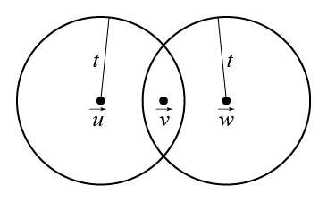
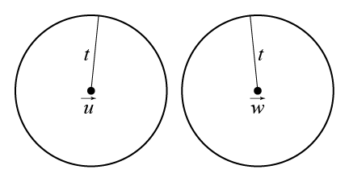

次の定理2は符号の最小重み $d$ が符号の性能を表す 重要なパラメータであることを示す．まず ベクトル $\vec{u}$ を中心とする半径 $r$ の球 $S_r(\vec{u})$を以下のように定義する． \[ S_r(\vec{u}) = \{\vec{v} \in V|d(\vec{u},\vec{v}) \leq r\} \] $S_r(\vec{u})$ は $\vec{u}$ との距離が $r$ 以下であるベクトル からなる集合である．これはユークリッド空間での球の定義と同じである．
以下の定理2で使う記号 $\lfloor x \rfloor$ は小数点以下を 切り捨てることを示す．例えば $\lfloor 3/2 \rfloor =1$， $\lfloor 1 \rfloor =1$ である．
定理 2
符号 $C$ の最小重みが $d$ のとき，符号 $C$ は
$t = \lfloor (d-1)/2 \rfloor$ 個以下の誤りを訂正できる．
またその逆も成り立つ．
証明
まず，符号の最小重みが $d$ のときに
全ての符号語についての半径 $t = \lfloor (d-1)/2 \rfloor$
の球が交わらないことを示す．背理法で証明するために
そうでないと仮定する．この場合 2 つの異なる符号語
$\vec{u}$ と $\vec{w}$ が存在し，それぞれについての半径
$t$ の球の共通部分，すなわち $S_t(\vec{u})\cap S_t(\vec{w})$
に要素が存在するのでこれを $\vec{v}$ とする（図6.1）．

図6.1 $\vec{v}\in S_t(\vec{u})\cap S_t(\vec{w})$ が存在する場合
前回資料のメトリックの条件3番の三角不等式より $d(\vec{u},\vec{w})\leq d(\vec{u},\vec{v})+d(\vec{v},\vec{w})$ となる．$\vec{v}$ はどちらの符号語の球にも入っているので $d(\vec{u},\vec{v})\leq t$, $d(\vec{v},\vec{w})\leq t$ であるため， $d(\vec{u},\vec{w})\leq 2t$ となる． $t = \lfloor (d-1)/2 \rfloor$ であるから $d(\vec{u},\vec{w})\leq d-1$ となる． しかし，$d(\vec{u},\vec{w}) = wt(\vec{u}-\vec{w})$ であって， 線形符号なので $\vec{u}-\vec{w}$ は0ベクトル以外の符号語であるから 重みは最小重み $d$ 以上である．$d(\vec{u},\vec{w})\leq d-1$ はこれに矛盾するので 背理法の仮定法より全ての符号語についての半径 $t$ の球が交わらないことがいえた（図6.2）．

図6.2 全ての符号語について球が交わらない場合
全ての符号語について半径 $t$ の球が交わらないのでどの符号語を 送信した場合でも $t$ 以下の誤りであれば送信した符号語だけの半径 $t$ の球に含まれるため，一意に決まる最も距離の近い符号語に復号することで 送信した符号語に復号される．
定理2の最小重みを最小距離に変えることで，同様の定理が非線形符号にもいえる． 線形符号については最小重みと最小距離は同じものである．
定理2から，$n$ と $k$ が与えられたならできるだけ $d$ が大きい符号が 求められる．潜在的に高い誤り訂正能力をもつからである． しかし，そのような符号を探すことは難しい．
[7,4]ハミング符号の最小重み $d$ は 3 であった．このため， $t = \lfloor (3-1)/2 \rfloor =1$ 個の誤りを訂正できる． 誤り訂正能力が 1 であることは簡単なハミング復号アルゴリズム で 1 個の誤りを訂正できることから既に知っている．しかし定理2 は誤り訂正能力が1であることを示すだけであってハミング復号のような アルゴリズムを示すことはできない．
原始的な復号アルゴリズムとしては全ての符号語をリストアップし， 受信語との距離を比較して最も近い符号語に復号する方法がある． しかし，第 2 回授業で述べたように，よい符号の中には全符号語を 手作業でリストアップするには符号語の数が多すぎるものがある． そのような符号の中には計算機を使ってリストアップし， 比較を行うものもある．しかし，多くの場合，単純にリストアップするよりも 効率的な復号方法がある．いくつかの実用的な符号では 計算機を使っても単純なリストアップする方式は非現実的な ものがある．符号理論にとって中心的な問題は効率的な復号法を 研究することである．場合によっては $d$ の値を最大化することよりも 効率的な復号法が存在することを優先して符号を選ぶこともある．
定理 2 により，受信語 $\vec{v}$ と最も距離の近い符号語との距離が $t$ 以下の場合は受信語は一意に一つの符号語の半径 $t$ の球の中にある， つまり $\vec{v}$ に最も近い符号語は一意に決まる． 受信語 $\vec{v}$ と最も近い符号語との距離が $t$ よりも大きい 場合は $\vec{v}$ に最も近い符号語が複数ある場合がある． 全ての受信語を復号しなければいけない場合は， 受信語に最も近い符号語のどれかを選んで復号結果とする． これを完全復号とよぶ．完全復号を行う必要がある のは，例えば磁気テープの読み出しや衛星との通信など フィードバックを利用できない状況である．
一方，受信語 $\vec{v}$ と最も距離の近い符号語との距離が $t$ 以下のときだけ復号を行い，それ以外では信頼性が低い 復号結果を出力するよりも復号誤りを検出する ことだけを行うことがある．これを不完全復号とよぶ． 誤りが検出された場合は，フィードバックを利用できる場合は 再送信の要求を行う．完全復号と不完全復号は状況に応じて選ばれる．
授業の6日後までにメールで提出せよ． メールの件名（サブジェクト）は CT06 とせよ．